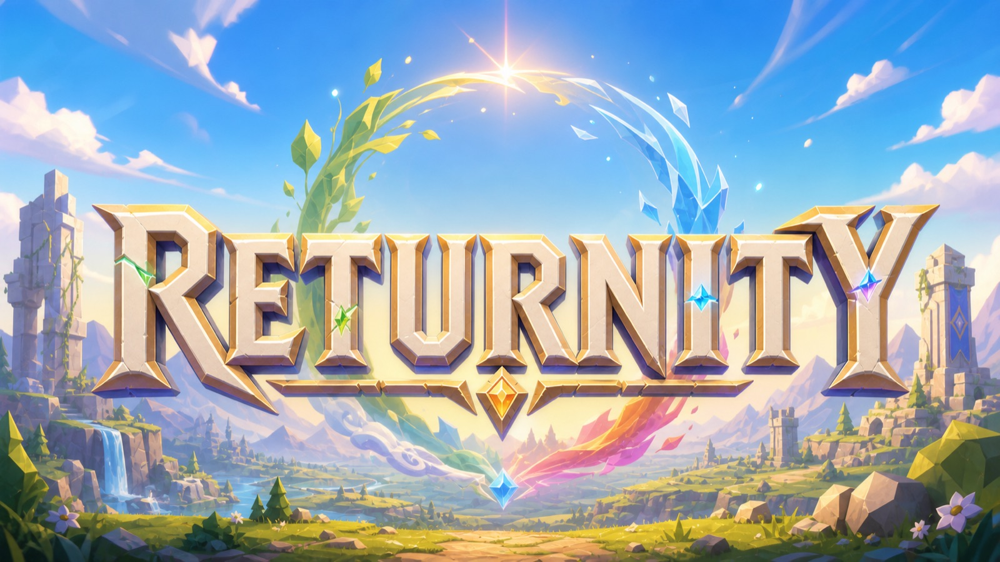
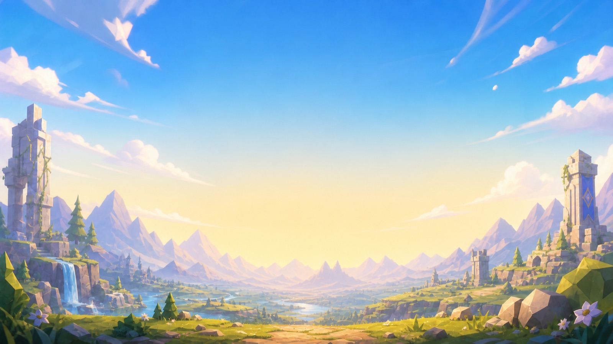

You died somewhere else. You woke up here.
Returnity is a shared-world adventure set on Alrathel — a world of sixteen peoples, four gods, three great powers keeping an uneasy peace, and a road out of the capital that gets more dangerous the further you walk it.
You are a Returner: someone who arrived from another world entirely. Nobody can tell you why. Once, a Returner appeared perhaps once in a generation, and the stories about those few are old enough to have gone soft at the edges. Now they arrive constantly, and the world has not decided how it feels about that.
This site is the companion volume: the places, the peoples, the myths, the monsters, and a plain explanation of how any of it is played. Everything here is knowledge the world itself has. The things Alrathel does not know about itself, it keeps.
Every Returner comes through in one of three bodies. This is not ancestry — it is the vessel your soul landed in. It decides how you feel in a fight, what heals you, and how strangers look at you across a tavern.
Living
You crossed over whole. Your own living human body came with you, breathing and unbroken. The most ordinary arrival, and the one that draws the fewest stares — though it wears out like any body does.
Undead
Your soul was diverted into an undead frame assembled from human parts. Disease means nothing to you. Bleeding and poison give up early. Old country custom looks at you sideways; no innkeeper in the capital will actually turn you away.
Machine
Your soul was diverted into a humanoid golem of bronze and gold, with eyes nothing living has. You do not bleed and you do not catch anything. Before the current wave, the world had only ever counted a handful of your kind.
The suspicion in this world is aimed at Returners, not at strange bodies. Alrathel is full of strange bodies. What unsettles people is a person who came from somewhere else, and might yet go back.
Registration at the guild counter, the four scores that make you who you are, the eight classes, fighting, dying, getting your body back, and every trade and pastime in between.
Read the handbook →
Seventeen regions in three layers — the surface loop, the Underworld beneath it, and one city in the sky that no road reaches. Where they connect, and how rough each one gets.
Walk the map →
Aurelia, Ogoth, Hefen and Vivili — four powers with four utterly different ideas of what devotion looks like, and four marks that share one shape.
Enter the pantheon →
A thousand years back to the Demon King's fall, forward through the long peace, to the morning the Returners started arriving in numbers.
Read the chronicle →
Sixteen peoples, twelve settlements, three factions holding a peace that everyone describes with the words for now.
Meet the world →
What lives out there, what it wants, and — more usefully — what it does right before it decides about you.
Open the field notes →
Alrathel is a circle and you begin in the middle of it. Danger does not run from one end of the map to the other — it radiates outward from Eldrath, the human capital, in every direction at once.
What makes a place safe is simple and it is always the same two things: whether anybody lives there, and how far it is from the capital. A grassland a day's walk from the gates with a village in it is gentle country. A range of broken hills the same distance out, with nobody in it at all, is not.
The furthest, coldest, emptiest place on the map is the Icebound Wastes, and nothing beyond it. The hardest place in the world is a city in the clouds you cannot walk to.
